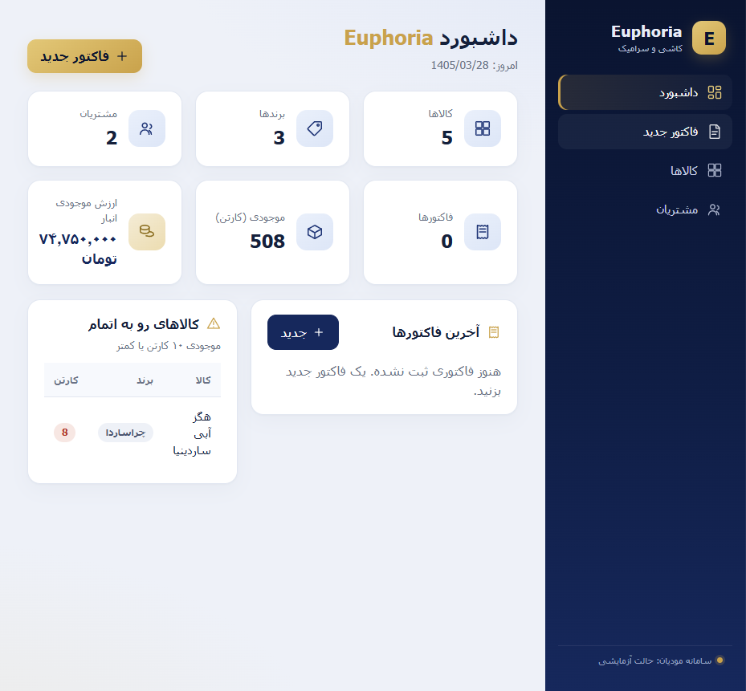

Euphoria: CRM and POS desktop app
Solo, my productAn offline CRM and point-of-sale desktop app I built and sell to retail shops. It runs on an embedded database and is packaged so a shop installs one file with no setup. It has its own offline license system, automatic backups, and an optional local-network mode so several computers share one live database.
A real product that businesses pay for, with an offline Ed25519 license system and automatic database backups.